__________________________________________________________________________________________________________________________________________
2021
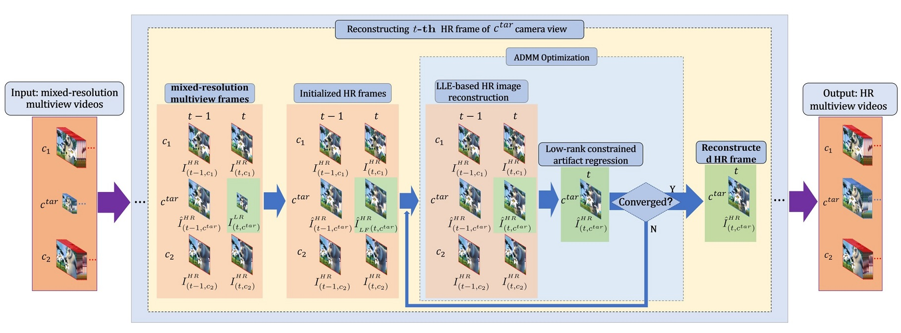
Low-Rank Constrained Super-Resolution for Mixed-Resolution Multiview Video
Shao-Ping Lu*, Sen-Mao Li*, Rong Wang, Gauthier Lafruit, Ming-Ming Cheng, and Adrian Munteanu
IEEE Transactions on Image Processing, 30: 1072-1085, 2021. [paper]
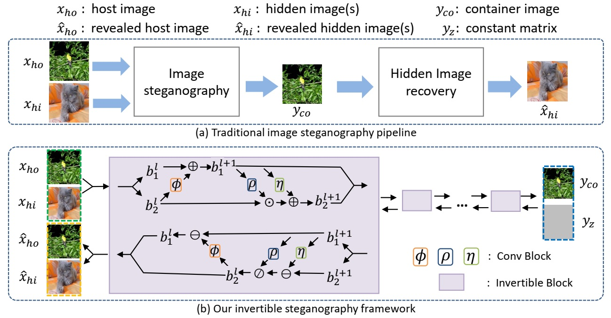
Large-capacity Image Steganography Based on Invertible Neural Networks
Shao-Ping Lu*, Rong Wang*, Tao Zhong, and Paul L. Rosin
IEEE Conference on Computer Vision and Pattern Recognition (CVPR), 2021. [paper] [project] [supp] [中译本]
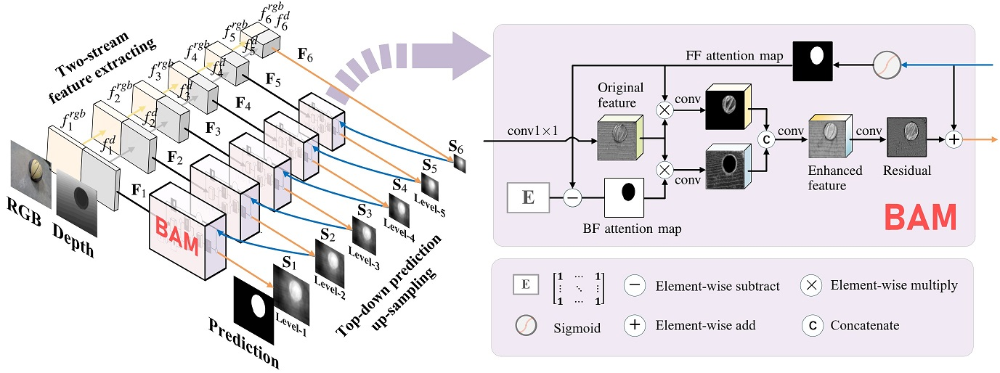
Bilateral Attention Network for RGB-D Salient Object Detection
Z. Zhang, Z. Lin, J. Xu, W. Jin, S.-P. Lu*, D.-P. Fan
IEEE Transactions on Image Processing, 30: 1949 - 1961, 2021. [paper]
Other publications:
News Content Completion with Location-Aware Image Selection. Z. Zhang, J. Wang, A. Jatowt, Z. Sun, S.-P. Lu, Z. Yang. The Thirty-Fifth AAAI Conference on Artificial Intelligence (AAAI), 2021. [paper]
DOTS: Decoupling Operation and Topology in Differentiable Architecture Search. Y. Gu, Y. Liu, Y. Yang, Y-H. Wu, S.-P. Lu, M-M. Cheng. IEEE Conference on Computer Vision and Pattern Recognition (CVPR), 2021. [paper]
Before 2020
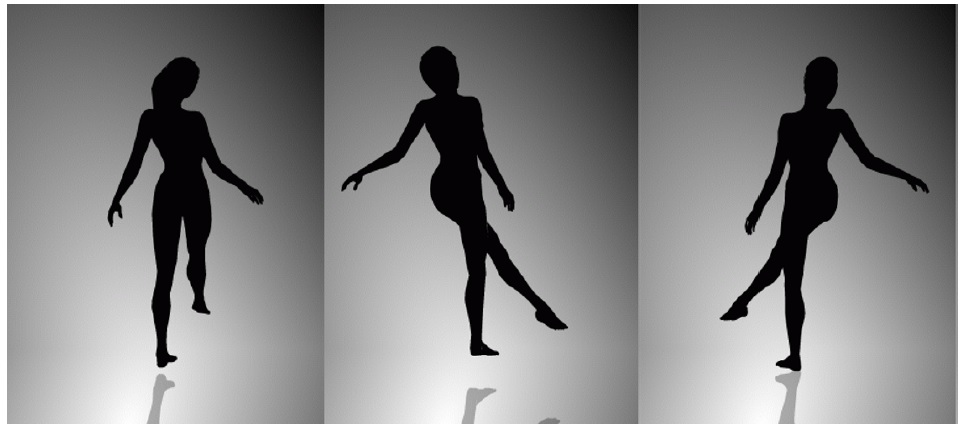
3D Computational Modeling and Perceptual Analysis of Kinetic Depth Effects
Meng-Yao Cui, Shao-Ping Lu, Miao Wang, Yong-Liang Yang, Yu-Kun Lai and Paul L. Rosin
Computational Visual Media, 6(3): 265-277, 2020. [paper]
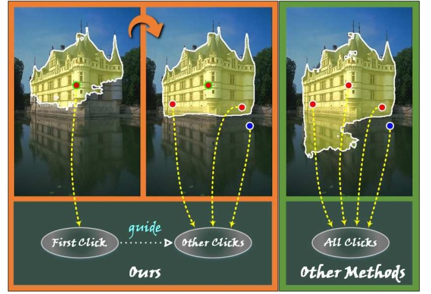
Interactive Image Segmentation With First Click Attention
Zheng Lin, Zhao Zhang, Lin-Zhuo Chen, Ming-Ming Cheng, Shao-Ping Lu
IEEE Conference on Computer Vision and Pattern Recognition (CVPR), 2020. [paper]
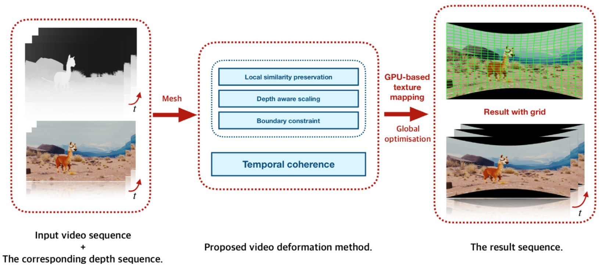
Consistent Video Projection on Curved Displays
Yangxintong Lyu, Shao-Ping Lu, Quentin Bolsee, and Adrian Munteanu
Signal Processing: Image Communication, 75: 76-88, 2019. [paper]
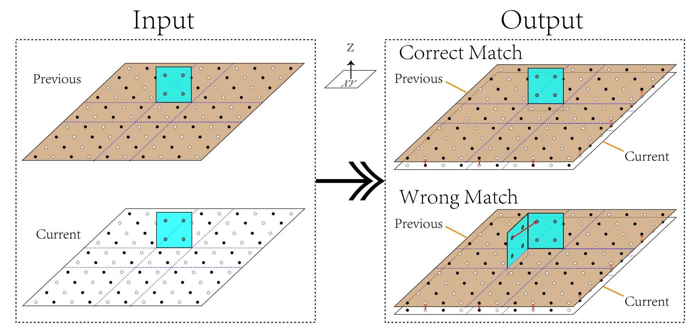
Geometry-aware ICP for Scene Reconstruction from RGB-D Camera
Bo Ren, JianCheng Wu, Yalei Lyu, Ming-Ming Cheng, and Shao-Ping Lu
Journal of Computer Science and Technology, 2019. [paper]
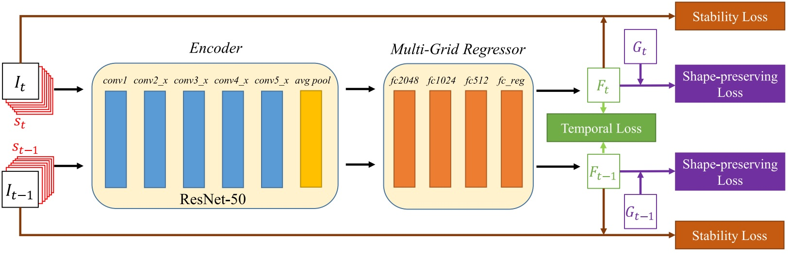
Deep Online Video Stabilization With Multi-Grid Warping Transformation Learning
Miao Wang,Guo-Ye Yang, Jin-Kun Lin,Song-Hai Zhang, Ariel Shamir, Shao-Ping Lu, and Shi-Min Hu
IEEE Transactions on Image Processing, 28(5): 2283-2292, 2019. [paper]
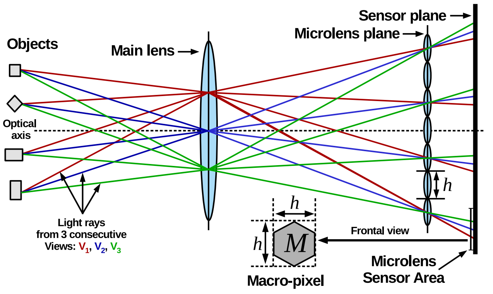
Dictionary Learning-based, Directional and Optimized Prediction for Lenslet Image
Rui Zhong, Ionut Schiopu, Bruno Cornelis, Shao-Ping Lu,Junsong Yuan and Adrian Munteanu
IEEE Transactions on Circuits and Systems for Video Technology, 29(4): 1116-1129, 2019. [paper]
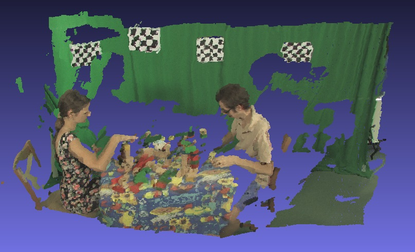
Robust Multiview Synthesis for Wide-Baseline Camera Arrarys
Beerend Ceulemans, Shao-Ping Lu, Gauthier Lafruit, and Adrian Munteanu
IEEE Transactions on Multimedia, 20(9): 2235-2248, 2018. [paper]
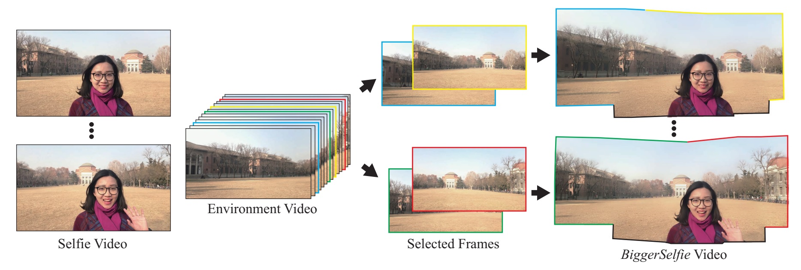
BiggerSelfie: Selfie Video Expansion with Hand-held Camera
Miao Wang, Ariel Shamir, Guo-Ye Yang, Jin-Kun Lin, Guo-wei Yang, Shao-Ping Lu, and Shi-Min Hu
IEEE Transactions on Image Processing, 27(12): 5854-5865, 2018. [paper]
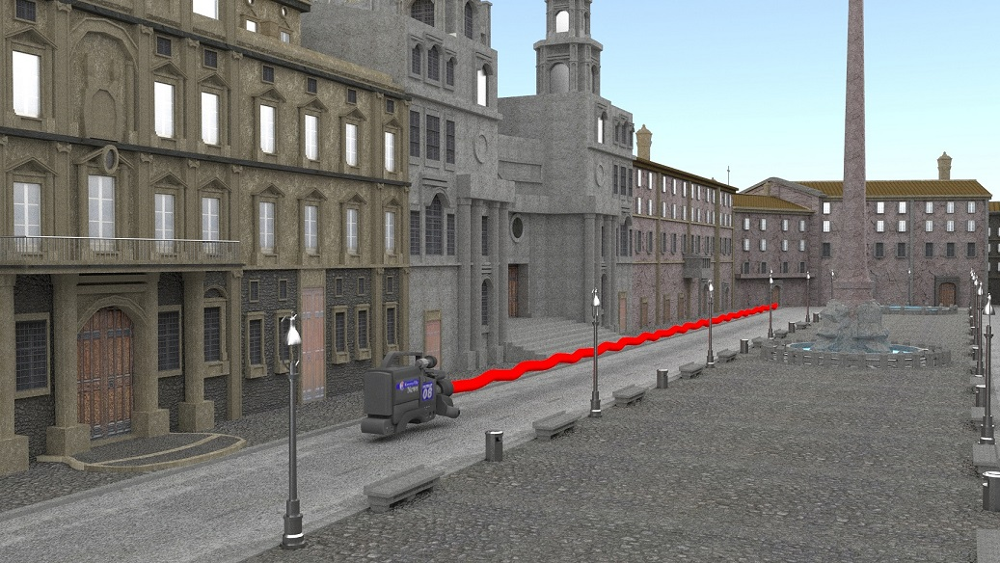
Synthesis of Shaking Video using Motion Capture Data and Dynamic 3D Scene Modeling
Shao-Ping Lu, Jie You, Beerend Ceulemans, Miao Wang and Adrian Munteanu
IEEE International Conference on Image Processing (ICIP), 2018. [paper][video]
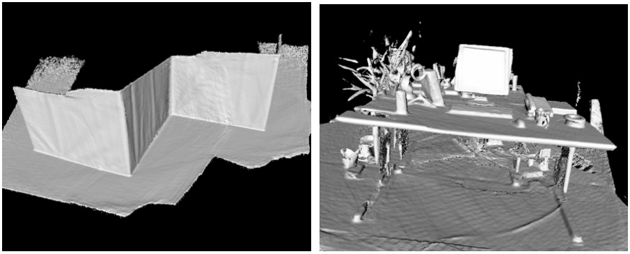
Structured Skip List: A Compact Data Structure for 3D Reconstruction
Shi-Jie Li, Ming-Ming Cheng, Yun Liu, Shao-Ping Lu, and Victor Adrian Prisacariu
IEEE International Conference on Intelligent Robots (IROS), 2018. [paper][video]
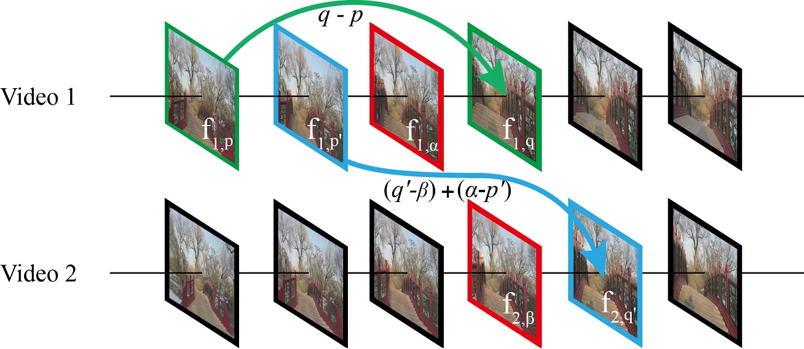
Hyper-lapse from Multiple Spatially-overlapping Videos
Miao Wang, Jun-Bang Liang, Song-Hai Zhang, Shao-Ping Lu, Ariel Shamir, and Shi-Min Hu
IEEE Transactions on Image Processing, 27(4): 1735-1747, 2018.[paper]
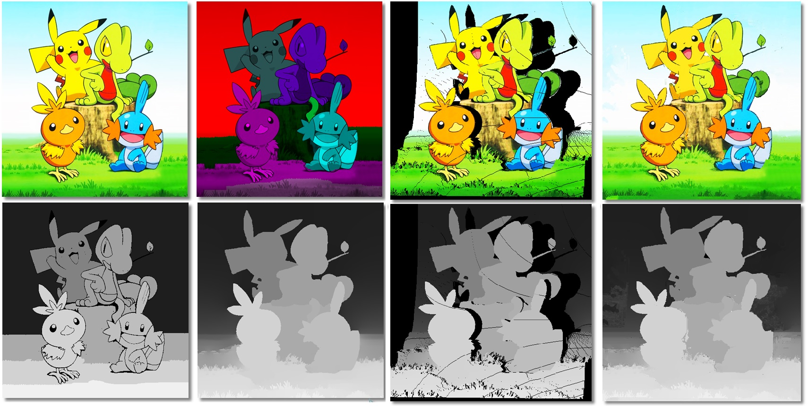Multiview Conversion of 2D Cartoon Image
Shao-Ping Lu, Sibo Feng, Beerend Ceulemans, Miao Wang, Rui Zhong, and Adrian Munteanu
Communications in Information and Systems, 16(4):229-254, 2017. [paper] [video(38MB)]
Efficient Depth-aware Image Deformation Adaptation for Curved Screen Displays
Shao-Ping Lu, Ruxandra-marina Florea, Pablo Cesar, Peter
Schelkens, and Adrian Munteanu
ACM Conference on Multimedia (ACM MM) Thematic Workshop, 2017, 442-450. [paper] [video(96MB)]
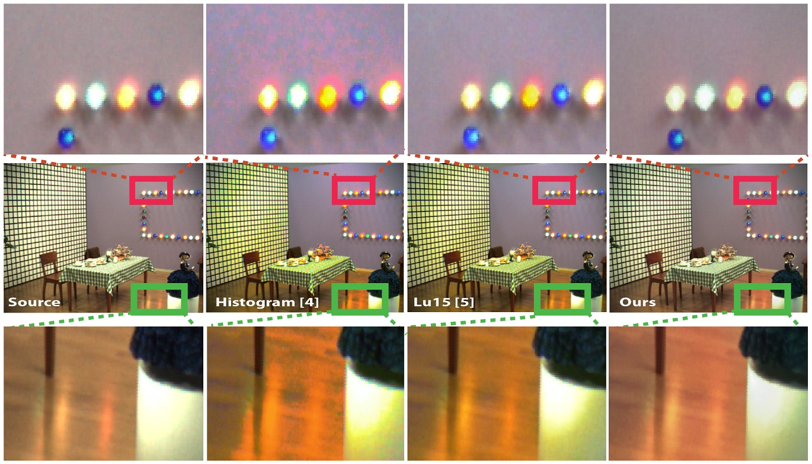Color Correction for Large-baseline Multiview Video
Siqi Ye, Shao-Ping Lu, and Adrian Munteanu
Signal Processing: Image Communication. 53: 40-50, 2017. [paper]
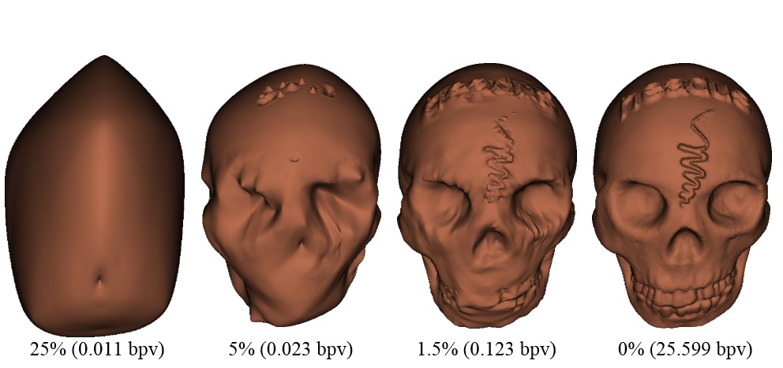
Wavelet-based L∞ Semi-regular Mesh Coding
Ruxandra-marina Florea, Adrian Munteanu, Shao-Ping Lu, and Peter
Schelkens
IEEE Transactions on Multimedia. 19(2): 236-250, 2017. [paper]
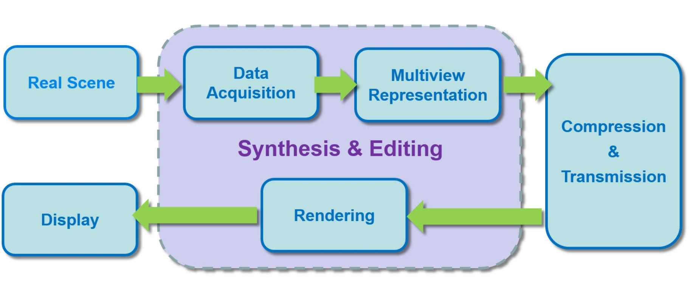A Survey on Multiview Video Synthesis and Editing
Shao-ping Lu, Tai-Jiang Mu, and Song-Hai Zhang
Tsinghua Science and Technology. 21(6): 678-695, 2016. [paper]
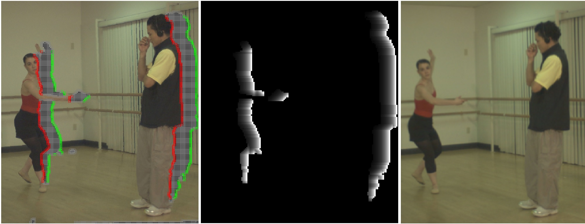Efficient MRF-based Disocclusion Inpainting in Multiview Video
Beerend Ceulemans, Shao-Ping Lu, Gauthier Lafruit, Peter
Schelkens, and Adrian Munteanu
International Conference on Multimedia and Expo (ICME). IEEE, 2016. [paper]
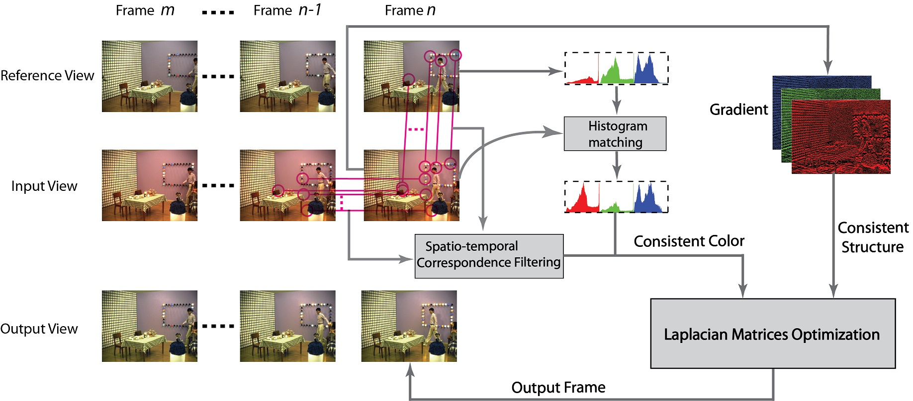Spatio-temporally Consistent Color and Structure Optimization for Multiview Video Color Correction
Shao-ping Lu, Beerend Ceulemans, Adrian Munteanu and Peter
Schelkens
IEEE Transactions on Multimedia. 17(5): 577-590, 2015. [paper] [video(72MB)]
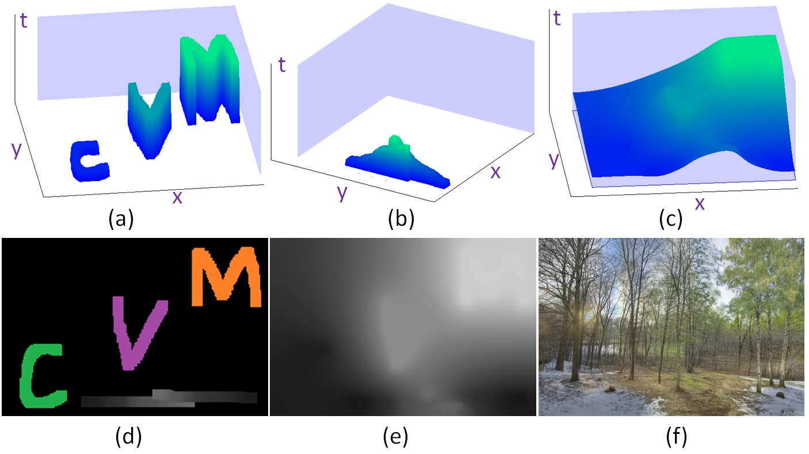Color Retargeting: Interactive Time-varying Color Image Composition from Time-lapse Sequences
Shao-ping Lu, Guillaume Dauphin, Gauthier Lafruit, and Adrian Munteanu
Computational Visual Media Journal, 1(4), 321-330, 2015. [paper] [video(70MB)]
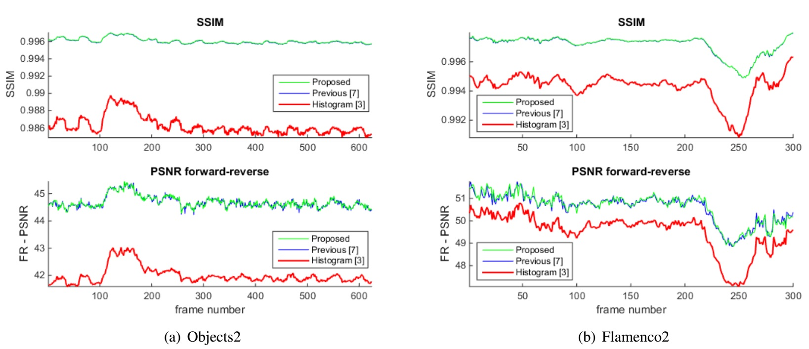Globally Optimized Multiview Video Color Correction Using Dense Spatio-temporal Matching
Beerend Ceulemans, Shao-ping Lu, Peter
Schelkens, and Adrian Munteanu
International Conference on 3DTV. IEEE, 2015. [paper]
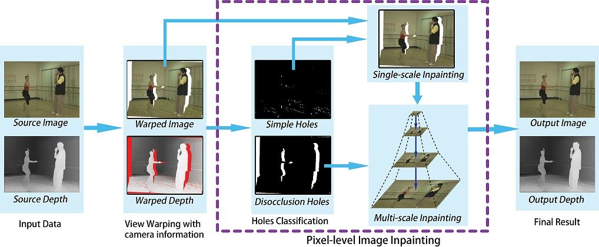Performance
Optimization for PatchMatch-based Pixel-level Multiview Inpainting
Shao-ping Lu, Beerend Ceulemans, Adrian Munteanu and Peter
Schelkens
International Conference on 3D Imaging (IC3D). IEEE, 2013. [paper]
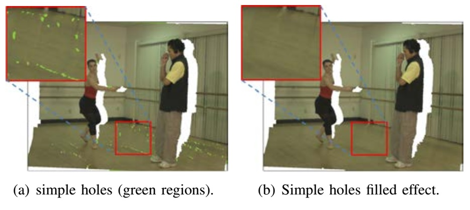Depth-based
View Synthesis Using Pixel-level Image Inpainting
Shao-ping Lu, Jan Hanca, Adrian Munteanu and Peter
Schelkens
18th International Conference on Digital Signal
Processing (DSP), IEEE, 2013. [paper]
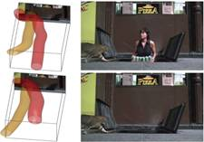Time-Line
Editing of Objects in Video
Shao-Ping Lu, Song-Hai Zhang, Jin Wei, Shi-Min Hu and Ralph R. Martin
IEEE Transactions on Visualization and Computer
Graphics, 19(7), 1218-1227, 2013. [paper] [video
(96MB)]
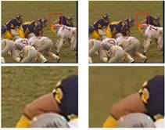Saliency-Based Fidelity
Adaptation Preprocessing for Video Coding
Shao-Ping Lu and Song-Hai Zhang
Journal of Computer Science and Technology. 26(1): 195-202, 2011.
[paper]
Visual Importance based Painterly
Rendering for Images
Shao-Ping Lu and Song-Hai Zhang
Journal of Computer-Aided Design Computer Graphics. (in Chinese). 22(7): 1120-1125, 2010.
__________________________________________________________________________________________________________________________________________